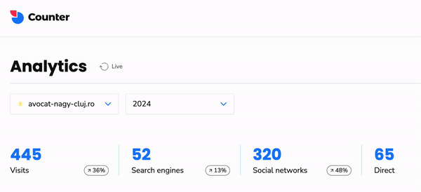

Avocat Sebastian Nagy
Studiu de caz
Ce face un avocat tânăr, ambițios și pregătit să cucerească lumea? Website nou!
În vara anului 2023, avocatul clujean Sebastian Gabriel Nagy a avut nevoie de un website și apelat la serviciile noastre în baza unei recomandări. Având abilitățile digitale potrivite, am acceptat cu mândrie și bucurie provocarea. Ce a început cu o cafea și cu o schiță pe o agendă încărcată cu termene, s-a concretizat 30 de zile mai târziu cu o identitate vizuală personalizată completă - logo, cărți de vizită, manual de brand, un website modern responsive și un parteneriat continuu de success pentru Consultanță digitală și Marketing.
Sari la 1. Strategie • 2. Implementare • 3. Rezultate • 4. Concluzie
1. Strategie
Tenacitate, abilitate și pasiune sunt calitățile lui Sebastian pe care am vrut neapărat să le transmitem în mediul digital. În acest scop, am decis împreună că vom livra un brand modern complet, un website static optimizat pentru dispozitive mobile, o strategie integrată de marketing pe Social Media și unele servicii digitale adiacente, incluse în abonamentul GOLD.
Informații proiect
- Tip client: Cabinet Individual
- Locație: Cluj-Napoca
- Tip abonament: GOLD
- Website: https://avocat-nagy-cluj.ro/
Servicii implementate de  SOLON
SOLON
- Strategie marketing
- Mentenanță 2 profile Social Media
- Facebook, Instagram
- Research hashtags
- Conturare logo
- Manual de brand
- Servicii foto profesionale
- Adresa email personalizate
- Design UI/UX website
- Copywriting website
- Implementare & QA website
- Mentenanță website
- Analytics website
- Optimizare SEO
2. Implementare
Branding
Misiunea noastră este să facilităm tranziția lui Sebastian în mediul digital, iar în acest sens crearea unui identități vizuale reprezentative și coerente era imperativ în procesul de digitalizare completă.
În crearea unui Manual de Brand pentru Avocat Sebastian Nagy, am pornit de la paleta de culori patriotică, dar am ales o nuanță mai pastelată pentru a crea o atmosferă calmă și primitoare, influențând pozitiv starea lor emoțională.
În continuare, am selecționat un typeface care transmite modernitate și inspiră încredere în fiecare titlu și paragraf.
În cele din urmă, am conturat un logo iconografic minimalist care îmbină elemente grafice legale cu forma exotică a clasicului romb. Un logo simplu, dar memorabil este o strategie importantă pentru brandurile care doresc să construiască relații de lungă durată cu clienții lor.
Descarcă manualul de brand Avocat Nagy Sebastian aici.
Servicii foto profesionale
Serviciile foto profesionale sunt un instrument esențial pentru avocați în ceea ce privește construirea și menținerea unei imagini profesionale remarcabile in mediul online. Fotografiile profesionale pot fi folosite în apariții media, articole, interviuri, seminarii sau conferințe, reflectând profesionalismul avocatului. In cazul avocatului Sebastian Nagy, sesiunea foto a fost facuta de un fotograf profesionst local (Cluj-Napoca), iar rezultatele au adus mai multe vizualizări și interacțiuni pozitive pe platformele sociale.
Devoltare website
Alegere domeniu
Domeniul website-ului e o componenta importantă în identitatea digitală a unui brand deci l-am ales cu grija, avand în considerare aspecte de SEO și branding personal. Așa am ajuns la denumirea avocat-nagy-cluj.ro, un nume scurt, memorabil și prietenos pentru motoarele de căutare. Domeniul a fost înregistrat pe o perioada de 12 luni, urmând să fie reînnoit în fiecare an.
Development
Un website a fost punctul de pornire și obiectul principal al acestei colaborări, așa ca am livrat un website modern, rapid, sigur și ușor de folosit de pe orice device.
Pe website se află informații generale despre avocat, domenii de activitate, date de contact, widget Google Maps și apariții media. Mesajele trimise din secțiunea de Contact ajung direct în inbox-ul avocatului, iar secțiunea Apariții Media este gestionată chiar de avocat, prin intermediul unui CMS rudimentar. Un CMS, sau un sistem de management al conținutului, este un software care ajută la crearea, gestionarea și modificarea conținutului de pe un site web fără a fi nevoie de cunoștințe tehnice specializate în programare web.
Din punct de vedere al tehnologiilor folosite, website-ul este implementat clasic în HTML5, CSS3, JS și hostat pe un server din România pentru maxim de performanță pe plai mioritic. Folosim un API intern simplu pentru afișarea aparițiilor media pe website în mod dinamic. Auditul de securitate a trecut cu brio iar în ultima fază am instalat pe website funcționalități de analytics oferite de platformele Counter.dev și Hotjar pentru acces facil la date (anonimizate și agregate) despre vizitatorii online.
Adrese email personalizate
Adresele de email personalizate consolidează imaginea firmei și eficiența comunicării. Am creat adresa de email pentru fondator, am implementat un redirect către adresa principală de gmail pentru ca niciun email să nu treacă neobservat și am setat o semnătură email conform brandului.
Marketing
Scopul principal al serviciilor de marketing este creșterea vizibilității firmei în piața furnizorilor de servicii juridice. Primul pas a fost să definim colaborativ un plan de marketing general pentru următoarele 12 luni care să includă capitole precum SEO, Social Media, Ads, Offline. După câteva săptămâni și multiple runde de revizuiri, eram pregătiți să pornim oficial canalele de Social Media și să publicăm pe website îmbunătățirile de SEO.

Cu 1 postare pe săptămână pe Facebook, LinkedIn și Instagram, profilele de social media au crescut în engagement, având din ce în ce mai multă tracțiune cu efort minim din partea avocatului. În urma unui research de hashtags, am ales câteva seturi de hashtag cu potențial ridicat de viralizare pe Instagram pentru că hashtag-uri corecte pot crește semnificativ vizibilitatea postărilor tale, ajungând la un public mai larg și mai relevant pe rețelele de socializare.
Ca urmare, doar în prima săptămână de la lansare au intrat pe website peste 300 de vizitatori unici din România doar de pe Social Media.
În concluzie, externalizarea departamentului de marketing către o agenție precum SOLON oferă timp în plus pentru activitățile care chiar contează în practică juridică.
SEO (Search Engine Optimization)
Implementarea strategiilor SEO moderne și eficiente e crucială pentru a îmbunătăți poziția website-ului în rezultatele oferite de motoarele de căutare precum Google, Bing sau DuckDuckGo. Câteva dintre strategiile aplicate de SOLON în acest scop se numără:

- Informații Relevante: Pe website am plasat conținut unic, valoros și informativ care răspunde direct întrebărilor și nevoilor utilizatorilor.
- Optimizarea Imaginilor: Ne-am asigurat că toate imaginile sunt optimizate web si SEO.
- Îmbunătățirea Vitezei: Am optimizat timpului de încărcare al website-ului.
- Utilizarea SSL/HTTPS: Un website securizat este esențial pentru a câștiga încrederea motoarelor de căutare.
- Cercetarea Avansată a Cuvintelor Cheie (keywords): Am folosit instrumente profesionale precum ahrefs.com a identifica cuvinte cheie relevante domeniului juridic din Cluj-Napoca.
- Optimizare Website pentru Indexare Mobile-First: Ne-am asigurat că site-ul este complet optimizat pentru dispozitivele mobile, deoarece Google prioritizează versiunea mobilă în indexarea și clasarea acestuia.
- Monitorizarea Traficului Web: Utilizarea Google Analytics și a altor unelte pentru a înțelege comportamentul vizitatorilor pe website și a îmbunătăți strategiile SEO.
- Optimizarea pentru Local SEO: Ne-am asigurat că există o prezență completă pe Google MyBusiness pentru a spori vizibilitatea pe plan local.
- Utilizarea Social Media pentru a Spori Vizibilitatea: Distribuirea conținutului pe platforme sociale pentru a genera trafic constant și backlinks.
Avocații profesioniști precum Sebastian se concentrează adesea pe practica lor juridică și nu au timpul sau resursele necesare pentru a rămâne la curent cu cele mai recente tendințe și algoritmi de SEO sau Social Media. Externalizarea digitalizării permite avocaților să se concentreze pe domeniul lor de expertiză, în timp ce specialiștii SOLON se ocupă de toate aspectele prezenței online.
3. Rezultate
Rezultatele au fost pe măsura așteptărilor. În mai puțin de 30 de zile, echipa SOLON a livrat un manual de brand integral, logo, website de prezentare optimizat pentru mobil și o strategie de marketing pentru Social Media. În urma implementării strategiei de Social Media sugerate, pe website au ajuns în jur de 500 de vizitatori noi doar în primele 30 de zile.
Prin introducerea platformei digitale de comunicare, am reușit să să oferim clienților clienților noștri o experiență mai plăcută, eficientă și transparentă. Interacțiunea cu clienții s-a îmbunătățit semnificativ, facilitând comunicarea și accesul la informații de contact relevante.
În concluzie, implementarea soluțiilor digitale dezvoltate de agenția SOLON a avut un impact semnificativ asupra eficienței și performanței cabinetului de avocatură Sebastian Gabriel Nagy din Cluj-Napoca. Această inițiativă a reprezentat o tranziție esențială către o practică juridică modernă, adaptată la cerințele unei lumi digitale în continuă schimbare.
4. Concluzie
Așadar, digitalizarea practicii juridice aduce numeroase beneficii, atât directe cât și indirecte.
În mod direct, avocații își cresc productivitatea reușind sa ajute mai mulți clienți, iar în mod indirect prin creșterea alfabetizării digitale în randul profesioniștilor din domeniul juridic contribuim la dezvoltarea armonioasă a întregii profesii - ceea ce are numeroase efecte în lanț în întreaga societate românească.

Cum te putem ajuta?
SOLON oferă servicii digitale complete care îmbină creativitatea tehnologiei cu rigorile legii.
Vrei să te discutam despre digitalizarea practicii tale juridice?
Un coleg din departamentul tehnic va iniția o discuție telefonică în viitorul apropiat.